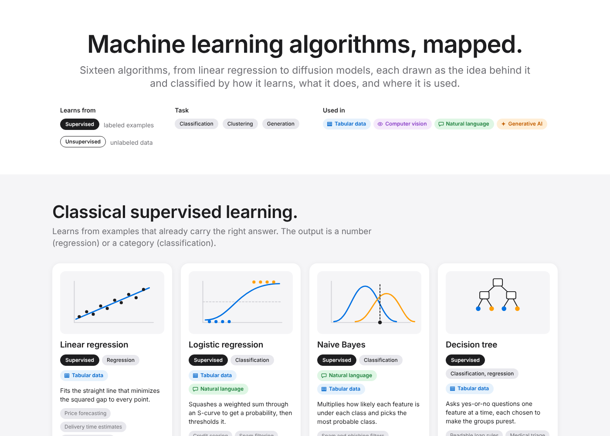
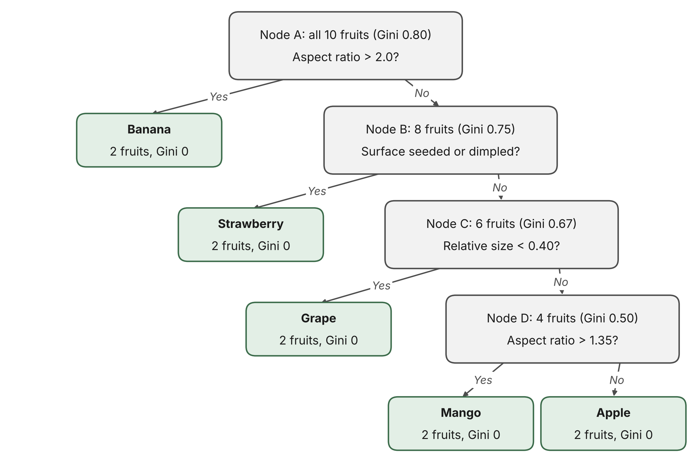

Chittaranjan Rath
I build the systems that make data and machine learning dependable in production.
Software engineer in Dallas, Texas. Six years building pricing and marketplace systems for a global e-commerce company, now working on retrieval-augmented generation in financial services and completing a master's in computer and information sciences with an AI concentration.
Personal value proposition
For engineering teams putting machine learning into production, I bring six years of building and operating distributed data and pricing systems at scale, together with current hands-on work on retrieval-augmented generation in a regulated industry. The result is AI that ships with the same guarantees as any other production service: monitored, reconciled, versioned, and recoverable when something breaks.
Artifacts
Each artifact is a finished piece of work from my graduate coursework, with the objective, process, tools, and value it demonstrates. The collection grows as the program progresses.
-

Machine learning algorithm framework
Sixteen algorithms, from linear regression to diffusion models, classified by how they learn and by where they are used across tabular data, computer vision, natural language, and generative AI. Each algorithm is drawn as a small diagram of the idea behind it, with a one-sentence mechanism and three uses; five connection chains show how the algorithms descend from one another, a transit-style map shows the four domains as lines with each algorithm as a station, and a timeline shows when each arrived.
-

Decision tree classification of a fruit image dataset
A step-by-step, plain-English algorithm for classifying the Kaggle Fruits Classification dataset with a decision tree: how the images become measurable attributes, how each split is chosen with Gini impurity (worked through by hand on ten example fruits), what parameters to set, and how the results would be evaluated.
Professional bio
I am a software engineer who builds the systems behind data-heavy products. From 2020 to early 2026 I was a software development engineer at a global e-commerce company, where I designed and ran services that priced and moved goods at scale: a cross-marketplace rule framework that kept listings consistent across five European marketplaces, a contract pricing pipeline that priced freight bookings against a large rate card and fed billing and reconciliation, and an automation service that turned a multi-day manual rate card process into a job that finishes within an hour. I led small teams of engineers on these projects, mentored interns, and wrote the design documents and runbooks that kept the systems running after I moved on.
Toward the end of that time my work shifted toward applied AI: an internal rate intelligence platform that used retrieval-augmented generation to turn spreadsheets of carrier rates into lane-level pricing comparisons, and a hackathon project that read a design document and generated infrastructure code from it, which was approved for production. I now work on an AI/ML team at a large bank, building retrieval-augmented generation systems over internal document collections: semantic search, document chunking, summarization, and question answering, delivered as Python microservices.
I hold an M.Tech from IIIT Hyderabad and a B.Tech from VSSUT Burla, and I am completing a Master of Science in Computer and Information Sciences with an AI concentration at Indiana Wesleyan University. Before that I spent several years in IT services. My goal is a staff engineer role on an AI infrastructure team, working on the hard problems of making models reliable, observable, and affordable in production.
- Based in
- Dallas, Texas
- Currently
- AI/ML engineering in financial services; graduate student at Indiana Wesleyan University
- Previously
- Software development engineer at a global e-commerce company (2020 to 2026); IT services before that
- Education
- M.Tech, IIIT Hyderabad; B.Tech, VSSUT Burla; MS in progress, Indiana Wesleyan University
- Core tools
- Java, Python, AWS, DynamoDB, Spark, React, LLM and RAG pipelines
Earlier coursework
Five artifacts from my earlier AI coursework at Indiana Wesleyan University are kept on their own page, as they were published: a visual timeline of the history of artificial intelligence, a comparison of machine learning and deep learning, a plain-language explainer of neural networks, an analysis of data challenges in machine learning, and an AI business intelligence newsletter.